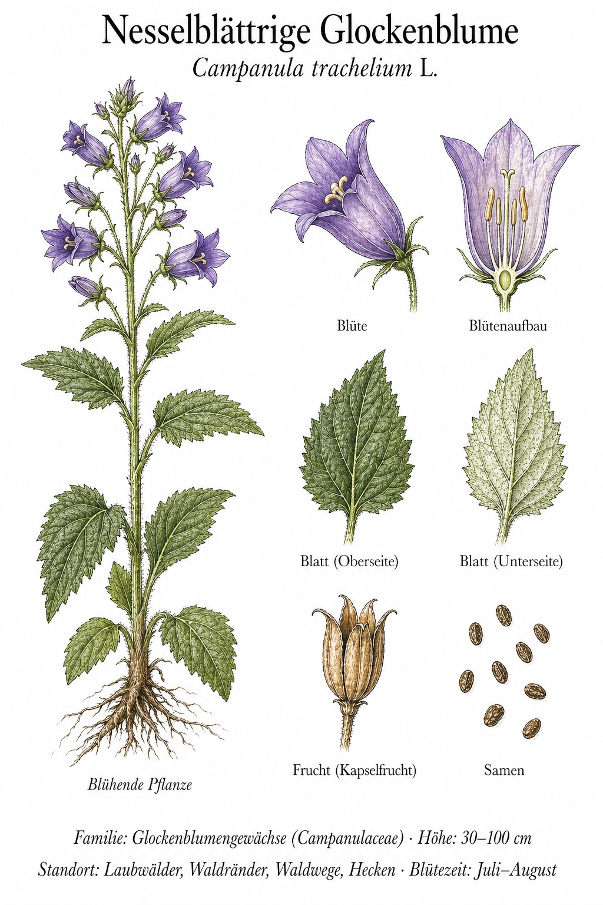
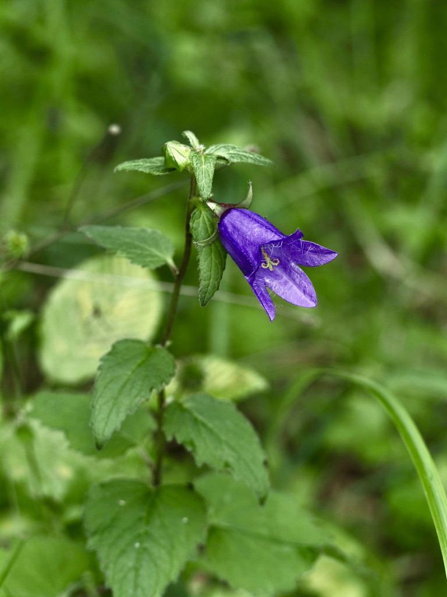

Brennnessel-Blätter, aber blaue Glocken – eine Glockenblume, die sich tarnt.


Das Brennnessel-Versteck
Solange C. trachelium nicht blüht, hält man sie problemlos für eine Brennnessel: kantiger Stängel, herzförmig-gezähnte Blätter, sogar leicht raue Behaarung. Erst wenn ab Juli die großen blauvioletten Glocken aus den Blattachseln klingen, gibt sie sich preis. Diese Mimikry bewahrt sie vermutlich vor Verbiss durch Wild – Brennnesseln werden gemieden.
Die Wald-Glockenblume
Im Gegensatz zu den meisten Glockenblumen, die volle Sonne lieben, fühlt sich die Nesselblättrige im Halbschatten richtig wohl. An Waldrändern, in lichten Buchenwäldern und an alten Hecken bildet sie kleine Bestände. „Trachelium" kommt aus dem Griechischen und bedeutet „Hals" – früher galt sie als Heilpflanze gegen Halsleiden, daher der alte Name „Halskraut".
Wissenswertes & Merksätze
Erkennungszeichen
Aufrechter, kantiger Stängel, 50–100 cm hoch. Blätter gestielt, herzförmig, am Rand grob gezähnt – wie bei der Brennnessel, aber ohne Brennhaare. Glocken büschelig in den oberen Blattachseln, behaart.
Standortspezialistin
Während andere Campanula-Arten (z. B. C. rapunculus) offenes Grasland bevorzugen, ist C. trachelium ein klassischer Halbschattenzeiger. Findet man sie, ist der Standort meist ein alter, naturbelassener Waldsaum.